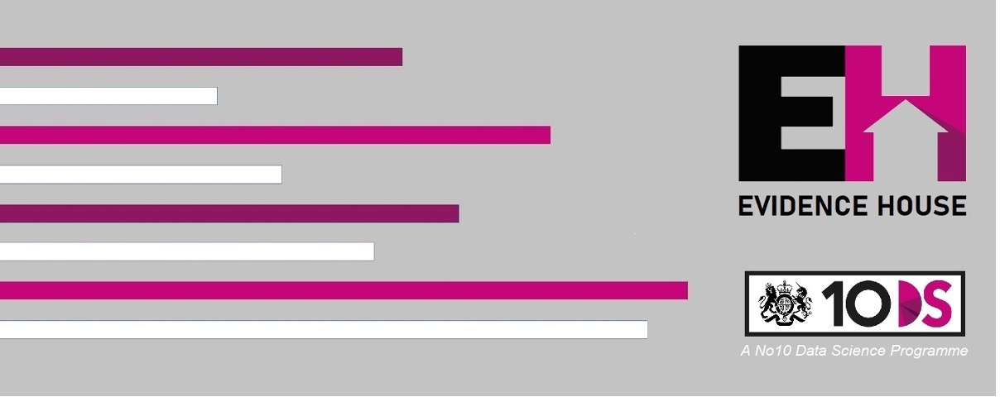
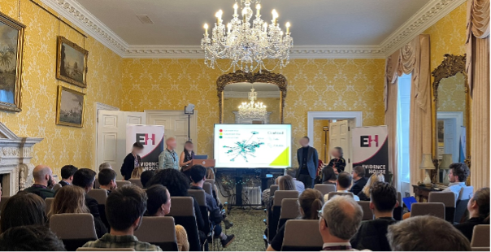

News from the House - Volume 1

Introduction
When we launched in January, we couldn’t have predicted the speed at which Evidence House would capture imaginations and take on a life of its own. I could not be more proud of this program. We now have a thriving community of more than 400 engineers, developers and analysts from across government, and the movement is growing fast. Our half day skills bootcamps have delivered free training in a range of topics including python coding and evaluation skills to 70 people in the past week alone! Through our hackathons, Evidence Housers have already generated an array of fascinating insights and promising solutions. Many of those with practical applications are being developed further for delivery into departments, with the expectation that they will have real world impact. We’re just getting started. This summer will see us mobilise our community on an even larger scale, collaborate across sectors and provide secondment and L&D opportunities to colleagues in every corner of government. If you’re a Civil Servant and want to deliver impact at pace, upgrade your technical skills and take your career to the next level, join us today.
Dr. Laura Gilbert, Chief Analyst and Director of Data Science, 10 Downing Street
This is the newsletter of Evidence House. Led by the 10 Downing Street Data Science team, we work with partners from across government and beyond radically upskill civil servants in data science and analysis whilst delivering innovative solutions to crowdsourced problems.
What have we been up to?
Since launch
First, a word from our sponsors INSERT PM VIDEO When we launched in January, we couldn’t have predicted the rate at which Evidence House would capture imaginations.
We now have a thriving community of over 350 engineers, developers and analysts from across government, and growing fast.
Through our hackathons they have generated an incredible array of insights and solutions, with some highly promising ones being developed further as a result. And we’re just getting started.
The coming weeks will see us launch some hugely exciting events and provide secondment and L&D opportunities to our amazing community.
If you’re a Civil Servant that wants to deliver real impact at pace, upgrade your technical skills and take your career to the next level then join us today by clicking this link.
Since Launching • 350 active members and growing • 130 have taken part in hackathons • 100 upskilled in python, machine learning and more • 5 secondments created (to develop products spun out from our hackathons) • 10 projects under development
Congratjulations ot our winners!

Congratulations to the winning teams of our March and May hackathons! We were delighted to welcome both teams to Downing Street to present their projects to a range of senior stakeholders and Ministers, all of whom were impressed by the work they have done. Collectively their work has the potential to: • Save thousands of people a year from the financial ruin and heartbreak that fraud leaves in its wake, by providing an SMS service that detects dodgy URLs • Help expedite our asylum decision making process, ensuring we can uphold our duty to support people in dire need
Coming Up
From Hackathon to Delivery - the Fraud Delivery Sprint
Delivering the results of our hackathon Secondments Do you want to help bring some of our amazing hackathon outputs to life? We are thrilled to announce that our friends in the NCA are offering 5 x 2-month secondments to help develop and implement some of the outputs of our march hackathon, which tackled serious fraud using open source data.
No10 Innovation Fellowships
It’s a ting that has happened, come take part
Other Opportunities
- 13th June Bootcamp – upskilling members in Python, machine learning and randomised evaluation
- July – AI workshop for departmental directors of analysis, perm secs and ministers
- July – Generative AI hack summer showcase
- August – Summer party
Updates from our friends
We work with partners throughout government. Here is fun things they’re doing
- the ONS are building a ting
- The PSFA has a thing too
- CDDO are probably doing something
Stay in touch!
We hope you found this useful! Sign up for updates here, or follow us on Slack, Twitter and LinkedIn